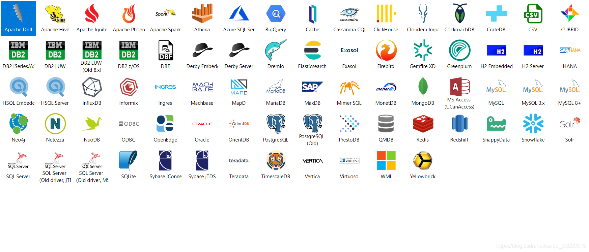

# dbeaver ee install 记录
dbeaver 支持连接多种关系 db 或 no sql
Enterprise Edition features: | |
Support of NoSQL databases: | |
MongoDB | |
Cassandra | |
InfluxDB | |
Redis | |
Amazon DynamoDB | |
Amazon DocumentDB | |
Amazon Keyspaces | |
Google Bigtable | |
Couchbase | |
CouchDB | |
Advanced extensions for: | |
Oracle | |
SQL Server | |
Netezza | |
Informix | |
AWS IAM, Kerberos and Active Directory authentication support | |
Advanced security (secure storage for user credentials, configuration encryption, master password, etc) | |
Additional drivers configuration for BigData/Cloud databases (Hadoop). | |
Most popular JDBC drivers are included in distribution and can be used in offline/limited internet access environment. | |
Additional EE plugins: | |
Visual SQL query builder | |
Task scheduler | |
Analytical charts generation | |
Mock data generator | |
Advanced schema compare/migration tools | |
Data compare tool | |
Office formats support (XLS) for data export | |
Advanced SQL execution plan viewer | |
Integrated Git (version control for scripts and configuration) | |
Persistent Query Manager database (allows to track SQL history) | |
Time series charts renderer | |
Eclipse Marketplace (allows to easily install 3rd party plugins) | |
All CE features of course | |
Online customer support |
6.0.0 版本支持连接如下

安装参考
https://zhile.io/2019/05/08/dbeaver-license-crack.html
https://dbeaver.com/files/ （尽量下载 6.0.0 版本）